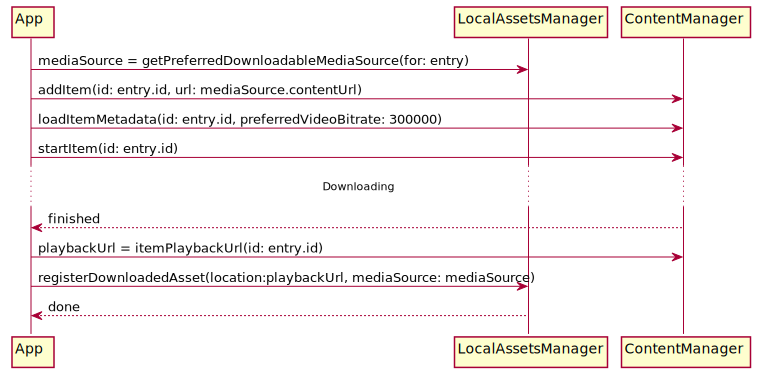
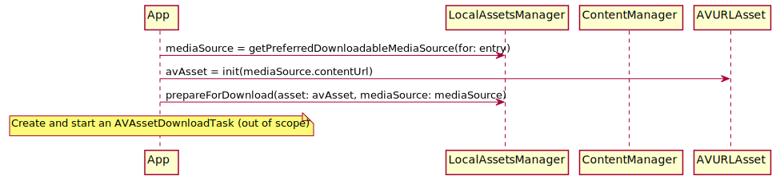

Offline Assets for iOS
PlayKit supports download and playback of assets.
Download
The PlayKit component responsible for local/offline/downloaded assets is LocalAssetsManager.
Select a source to download
A PKMediaEntry typically has more than one PKMediaSource, so the first step is selecting the most suitable source.
Call LocalAssetsManager.getPreferredDownloadableMediaSource(for:), passing a PKMediaEntry. It will try to find a downloadable
source.
There are two mechanisms for downloading HLS assets: Kaltura’s DownloadToGo (DTG) library and Apple’s AVAssetDownloadTask.
In most cases, DTG should be used. The only case in which AVAssetDownloadTask must be used, is when downloading FairPlay on iOS 10.0-10.2.
NOTE: We recommend that apps restrict FairPlay downloads to iOS 10.3 and up and use DTG.
DownloadToGo (DTG)
Kaltura’s DTG library can download HLS assets, with and without FairPlay protection. Please look at DTG’s guide for detailed usage instructions - the following focuses on PlayKit+DTG integration.


This flow works for clear and AES HLS assets on iOS 8 and up. It also works for FairPlay assets on iOS 10.3 and up.
NOTE: If the asset is FairPlay-protected, the master playlist MUST contain a EXT-X-SESSION-KEY tag with the asset’s
skdURL. Without it, LocalAssetsManager won’t be able to install a FairPlay license. Example (replace ASSET_ID below with the actual id):
#EXT-X-SESSION-KEY:METHOD=SAMPLE-AES,URI="skd://ASSET_ID",KEYFORMAT="com.apple.streamingkeydelivery",KEYFORMATVERSIONS="1"
In Kaltura’s backend, this is done by enabling “Allow Fairplay Offline” in the VOD_PACKAGER_HLS delivery profile. See screenshot.
{kind=link}
AVAssetDownloadTask
AVAssetDownloadTask is a facility added to iOS in version 10.0. It can download HLS assets, with and without FairPlay protection. It can also download mp4 assets.
NOTE: As mentioned above, the only case in which
AVAssetDownloadTaskmust be used, is when downloading FairPlay on iOS 10.0-10.2. We recommend avoiding FairPlay downloads on those iOS versions.


See PlayKit’s OfflineSample and Apple’s HLSCatalog for help with using AVAssetDownloadTask.
Playback
Call LocalAssetsManager.createLocalMediaEntry(for:localURL:), returns a PKMediaEntry ready to play.
DTG
Call ContentManager.itemPlaybackUrl(id:) to get the playback URL. This is what should be passed as the localURL above.
AVAssetDownloadTask
Use the download location as you saved during the download process.